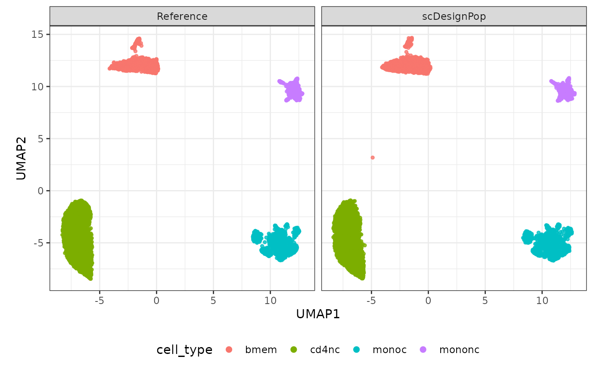
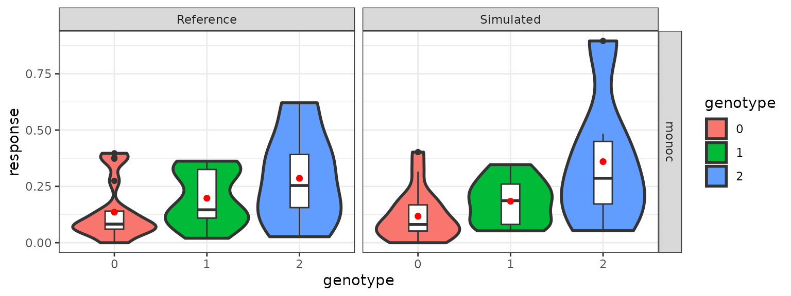

scDesignPop Quickstart
Chris Dong
Department of Statistics and Data Science, University of California, Los Angelescycd@g.ucla.edu
Yihui Cen
Department of Computational Medicine, University of California, Los Angelesyihuicen@g.ucla.edu
28 May 2026
Source:vignettes/scDesignPop.Rmd
scDesignPop.RmdIntroduction
Population-scale single-cell RNA-sequencing (scRNA-seq) provides an unprecedented opportunity to study how genetic variation shapes gene expression at cellular resolution. However, generating such datasets remains costly, methodological choices for eQTL analysis still lacks concensus, and sharing individual-level data raises privacy concerns.
scDesignPop is a generative framework designed to address these challenges by simulating realistic population-scale single-cell datasets with genetic effects. By learning from a reference dataset, it enables users to generate synthetic data that preserves key biological and statistical properties, while providing flexibility for study design, benchmarking, and privacy-aware data sharing.
Overview of the workflow
In this tutorial, we demonstrate a minimal workflow for using scDesignPop. Starting from a reference dataset consisting of gene expression and genotype information, we construct model inputs, fit gene-level marginal and joint models, and finally generate simulated datasets.
Load packages and example data
We begin by loading the required packages and example datasets provided in scDesignPop.
Inspect the data
We first examine the structure of the input datasets. The
example_sce object contains gene expression across cells
along with cell-level metadata such as cell type and individual
identity.
dim(example_sce)
#> [1] 982 7998
head(colData(example_sce))
#> DataFrame with 6 rows and 5 columns
#> indiv pool cell_type sex age
#> <factor> <factor> <factor> <factor> <numeric>
#> Cell1 SAMP30 1 bmem 2 76
#> Cell2 SAMP30 1 monoc 2 76
#> Cell3 SAMP30 1 mononc 2 76
#> Cell4 SAMP30 1 monoc 2 76
#> Cell5 SAMP30 1 monoc 2 76
#> Cell6 SAMP30 1 bmem 2 76The example_eqtlgeno dataframe contains genotype
information and candidate gene–SNP pairs that define putative eQTL
relationships.
head(example_eqtlgeno)
#> # A tibble: 6 × 45
#> cell_type gene_id snp_id CHR POS SAMP1 SAMP2 SAMP3 SAMP4 SAMP5 SAMP6
#> <chr> <chr> <chr> <dbl> <dbl> <dbl> <dbl> <dbl> <dbl> <dbl> <dbl>
#> 1 monoc ENSG0000016… 1:101… 1 1.02e7 0 0 0 0 0 0
#> 2 monoc ENSG0000022… 1:108… 1 1.09e8 1 0 0 0 1 0
#> 3 cd4et ENSG0000016… 1:110… 1 1.11e7 2 2 2 2 2 2
#> 4 cd8et ENSG0000006… 1:111… 1 1.12e8 2 2 2 2 2 2
#> 5 nk ENSG0000006… 1:111… 1 1.12e8 2 2 2 2 2 2
#> 6 nkr ENSG0000006… 1:111… 1 1.12e8 2 2 2 2 2 2
#> # ℹ 34 more variables: SAMP7 <dbl>, SAMP8 <dbl>, SAMP9 <dbl>, SAMP10 <dbl>,
#> # SAMP11 <dbl>, SAMP12 <dbl>, SAMP13 <dbl>, SAMP14 <dbl>, SAMP15 <dbl>,
#> # SAMP16 <dbl>, SAMP17 <dbl>, SAMP18 <dbl>, SAMP19 <dbl>, SAMP20 <dbl>,
#> # SAMP21 <dbl>, SAMP22 <dbl>, SAMP23 <dbl>, SAMP24 <dbl>, SAMP25 <dbl>,
#> # SAMP26 <dbl>, SAMP27 <dbl>, SAMP28 <dbl>, SAMP29 <dbl>, SAMP30 <dbl>,
#> # SAMP31 <dbl>, SAMP32 <dbl>, SAMP33 <dbl>, SAMP34 <dbl>, SAMP35 <dbl>,
#> # SAMP36 <dbl>, SAMP37 <dbl>, SAMP38 <dbl>, SAMP39 <dbl>, SAMP40 <dbl>This example includes genes, cells, individuals, and putative eQTLs, and is used for demonstration purposes.
Modeling and simulation
Step 1: construct a data list
We begin by preparing the reference data for downstream modeling and
simulation using constructDataPop. This function extracts
the expression matrix and cell-level covariates from the
SingleCellExperiment object, processes the eQTL/genotype
dataframe into gene-specific genotype inputs, and filters features and
SNPs as needed. The resulting objects provide a standardized interface
for the remaining steps of the scDesignPop workflow.
The two main inputs are a SingleCellExperiment object
(sce) and an eQTL/genotype dataframe
(eqtlgeno_df). The SingleCellExperiment object
stores the expression matrix together with cell-level metadata, whereas
the eQTL/genotype dataframe contains eQTL annotations and SNP genotypes
across individuals. At minimum, the eQTL/genotype dataframe should
include columns specifying the gene, SNP, chromosome, genomic position,
and cell state or cell type, followed by genotype columns for each
individual.
In this example, we use the raw count matrix stored in the
"counts" assay of example_sce, and we provide
new_covariate = as.data.frame(colData(example_sce)) so that
the simulation is performed using the same cell-level covariate
structure as the reference data. We also set
copula_variable = "cell_type", which means that the copula
model will later be fitted separately within each cell type.
Several arguments are used to tell constructDataPop how
variables are named in the input data:
-
slot_name = "counts"specifies which assay in theSingleCellExperimentobject should be used as the expression matrix. In most cases, this will be"counts"for UMI count data. -
celltype_colname = "cell_type"specifies the column in botheqtlgeno_dfand the cell metadata ofscethat contains cell type labels. -
feature_colname = "gene_id"specifies the gene identifier column ineqtlgeno_df. -
snp_colname = "snp_id"specifies the SNP identifier column ineqtlgeno_df. -
chrom_colname = "CHR"andloc_colname = "POS"specify the chromosome and genomic position columns for SNP annotation. -
indiv_colname = "indiv"specifies the individual identifier column in the cell metadata ofsce.
These column-name arguments should be changed to match the user’s own
data. For example, if the gene column in the eQTL dataframe is called
gene, then feature_colname = "gene" should be
used instead.
The arguments snp_mode and copula_variable
determine two important modeling choices:
snp_mode = "single"indicates that each gene is modeled using a single SNP. This is appropriate when the eQTL input already defines one SNP per gene, or when a single lead SNP is used for each gene.snp_mode = "multi"allows multiple SNPs per gene. In this case, SNPs are pruned based on genotype correlation, withprune_threscontrolling the correlation threshold used for pruning.copula_variable = "cell_type"means that the copula model will be fitted separately for each cell type. Ifcopula_variable = NULL, then one copula is fitted across all cells. If continuous cell-state information such as pseudotime is available, users can instead setcopula_variable = time_colname, wheretime_columnspecifies the column in botheqtlgeno_dfand the cell metadata ofscethat contains continuous cell state/pseudotime values, in which case cells are grouped into time quantiles for copula fitting.
The resulting data_list contains the core inputs used
throughout the pipeline, including the expression matrix, cell
covariates, filtered feature sets, and gene-specific genotype tables
used for model fitting and simulation.
Below, we use the example data and explicitly map each required variable to its column name.
data_list <- constructDataPop(
sce = example_sce,
eqtlgeno_df = example_eqtlgeno,
new_covariate = as.data.frame(colData(example_sce)),
copula_variable = "cell_type",
slot_name = "counts",
snp_mode = "single",
celltype_colname = "cell_type",
feature_colname = "gene_id",
snp_colname = "snp_id",
loc_colname = "POS",
chrom_colname = "CHR",
indiv_colname = "indiv"
)Step 2: Fit marginal models
We next fit a marginal model for each gene using
fitMarginalPop. In scDesignPop, the marginal model
describes the distribution of expression for one gene at a time as a
function of cell-level covariates, individual-level covariates, and
genetic effects. These fitted gene-level models form the foundation of
the generative framework, because they determine the mean structure that
will later be used for simulation.
A key argument in this step is mean_formula, which
specifies the baseline model for gene expression without
explicitly including SNP terms. Users should provide the
covariates and random effects that they want to include in the gene
expression model, and scDesignPop then automatically adds the SNP
genotype effect, together with any requested first-order SNP interaction
terms. This design allows genotype effects from different SNPs to be
incorporated consistently across genes automatically.
In the example below, we use
mean_formula = "(1|indiv) + cell_type"which includes: - a random intercept for indiv, to
account for correlation among cells from the same individual - a fixed
effect for cell_type, to capture differences in baseline
expression across cell types
We also set
interact_colnames = "cell_type"so that SNP effects are allowed to vary across cell types through first-order SNP-by-cell-type interactions. This is useful when the goal is to model cell-type-specific genetic effects.
Several arguments control the main modeling choices:
-
model_family = "nb"specifies the parametric family used for model fitting. For count-based scRNA-seq data, the negative binomial family is often a natural choice because it accommodates overdispersion relative to a Poisson model. -
mean_formulaspecifies the non-genetic part of the mean model, including fixed effects and random effects. Users should include covariates they want to adjust for here, such as cell type, batch, sex, age, or other biological and technical factors. -
interact_colnamesspecifies which covariates should have first-order interactions with SNP genotype. For example, settinginteract_colnames = "cell_type"allows genetic effects to differ across cell types. If no interaction is needed, this can be left asNULL. -
parallelizationandn_corescontrol how gene-wise model fitting is parallelized. Since one model is fit per gene, this step can be computationally expensive for large datasets, which makes the parallelization necessary.
In practice, users should tailor mean_formula to the
structure of their study. For example: - if the data include repeated
cells from each donor, a random intercept such as (1|indiv)
is often appropriate - if batch effects are present, a batch term can be
added to the formula - if the goal is to model cell-type-specific eQTL
effects, cell_type should be included in the formula and
also specified in interact_colnames
The output marginal_list stores the fitted model for
each gene, together with the SNP covariates used in each fit.
marginal_list <- fitMarginalPop(
data_list = data_list,
mean_formula = "(1|indiv) + cell_type",
model_family = "nb",
interact_colnames = "cell_type",
parallelization = "parallel",
n_threads = 20L,
loc_colname = "POS",
snp_colname = "snp_id",
celltype_colname = "cell_type",
indiv_colname = "indiv"
)Step 3: Fit a Gaussian copula
The marginal models fitted in the previous step describe each gene
individually, but they do not capture dependence between genes. To
preserve realistic co-expression structure in the simulated data,
scDesignPop next fits a copula model using fitCopulaPop.
This step links the fitted marginal distributions across genes and
estimates their joint dependence structure.
In scDesignPop, copulas are fitted within predefined correlation
groups, specified by the corr_group variable in
input_data. These groups are determined in
constructDataPop through the copula_variable
argument. In this example, we set
copula_variable = "cell_type" in Step 1, so the copula is
fitted separately within each cell type. This allows the simulated data
to preserve cell-type-specific gene–gene correlation patterns.
Several arguments control how the copula is fitted:
-
sceandassay_usespecify the reference expression data used to estimate dependence. Here we use the count matrix stored in the"counts"assay. -
input_dataprovides the cell-level covariates and must contain thecorr_groupvariable that defines how cells are grouped for copula fitting. -
marginal_listcontains the fitted gene-level models from Step 2 and provides the marginal distributions needed to construct the joint model. -
family_use = "nb"should match the family used in the marginal fitting step. -
copula = "gaussian"specifies that a Gaussian copula is used to model dependence through a correlation matrix. -
parallelizationandn_corescontrol the parallelization options and number of cores used for fitting.
The output of this step includes a fitted copula for each correlation group, together with summary measures such as overall AIC and BIC. These copulas are then used in the simulation step to generate correlated expression values across genes.
set.seed(123, kind = "L'Ecuyer-CMRG")
copula_fit <- fitCopulaPop(
sce = example_sce,
assay_use = "counts",
input_data = data_list[["covariate"]],
marginal_list = marginal_list,
family_use = "nb",
copula = "gaussian",
n_cores = 2L,
parallelization = "parallel"
)
RNGkind("Mersenne-Twister")Step 4: Extract simulation parameters
After fitting the marginal models, we convert them into explicit
parameter matrices for simulation using extractParaPop.
Given a target covariate design and genotype configuration, this
function evaluates the fitted models and returns the cell-by-gene
parameters required for data generation.
Conceptually, this step applies the fitted marginal models to the
cells that we want to simulate. In other words, the model coefficients
learned from the reference data are combined with the
new_covariate and new_eqtl_geno_list inputs to
determine the expected expression parameters for each simulated cell and
each gene.
Several arguments are particularly important in this step:
-
new_covariateis the cell-by-covariate data frame that defines the cells to be simulated. It should contain the same covariates used in model fitting, including thecorr_groupvariable needed for downstream copula-based simulation. -
new_eqtl_geno_listprovides the genotype inputs for the simulated cells for new individuals, organized by gene. If users want to simulate the same individuals as in the reference data, they can use the genotype list returned byconstructDataPop. If they want to simulate new individuals, they should instead provide genotype data corresponding to those new samples. -
family_useshould match the marginal model family used infitMarginalPop. -
assay_usespecifies the assay in the referenceSingleCellExperimentobject used as the basis for parameter extraction. -
parallelizationandn_corescontrol the parallelization option used to extract parameters from the fitted models across genes.
The output is a list of parameter matrices, each with cells in rows and genes in columns:
-
mean_mat: the conditional mean for each cell-gene pair -
sigma_mat: the gene-specific dispersion parameter for each cell-gene pair -
zero_mat: the zero-inflation probability for each cell-gene pair when a zero-inflated family is used
In this example, we use the same covariate structure and genotype inputs as in the reference data, so the extracted parameters correspond to simulation under the original design.
para_new <- extractParaPop(
sce = example_sce,
assay_use = "counts",
marginal_list = marginal_list,
n_cores = 2L,
family_use = "nb",
indiv_colname = "indiv",
new_covariate = data_list[["new_covariate"]],
new_eqtl_geno_list = data_list[["eqtl_geno_list"]],
data = data_list[["covariate"]],
parallelization = "parallel"
)Step 5: Simulate new expression data
Finally, we generate synthetic gene expression data using
simuNewPop. This step combines the parameter matrices from
Step 4 with the copula model from Step 3 to produce a new count matrix
that preserves both gene-specific expression and gene–gene
dependencies.
Conceptually, simulation proceeds in two stages. First, the copula
model is used to generate correlated latent variables across genes,
capturing the dependence structure learned from the reference data.
These latent variables are then transformed using the marginal
distributions defined by mean_mat, sigma_mat,
and zero_mat, resulting in simulated expression counts for
each cell and gene.
The main inputs to this function are:
-
mean_mat,sigma_mat, andzero_mat, which define the marginal distribution of each gene for each cell -
copula_list, which encodes the gene–gene dependence structure -
new_covariate, which specifies the covariate design of the simulated dataset
Several arguments control important aspects of the simulation:
-
family_use = "nb"should match the marginal model family used in previous steps. -
copula_listprovides the fitted copula models -
important_featuredetermines which genes are included in modeling dependence; by default, all genes are used. -
filtered_genecontains genes excluded during model fitting due to potential convergence issues and ensures consistent handling during simulation. -
parallelizationandn_corescontrol the parallelization option used.
The output is a gene-by-cell matrix of simulated counts.
set.seed(123, kind = "L'Ecuyer-CMRG")
newcount_mat <- simuNewPop(
sce = example_sce,
mean_mat = para_new[["mean_mat"]],
sigma_mat = para_new[["sigma_mat"]],
zero_mat = para_new[["zero_mat"]],
copula_list = copula_fit[["copula_list"]],
n_cores = 2L,
family_use = "nb",
input_data = data_list[["covariate"]],
new_covariate = data_list[["new_covariate"]],
important_feature = copula_fit[["important_feature"]],
filtered_gene = data_list[["filtered_gene"]],
parallelization = "parallel"
)
RNGkind("Mersenne-Twister")Step 6: Construct a SingleCellExperiment object
The simulated count matrix can be transformed into a
SingleCellExperiment object for downstream analysis. This
allows the simulated data to be handled using standard single-cell
workflows, consistent with the reference dataset.
In this step, we assign the simulated counts to the
"counts" assay, attach the corresponding cell-level
covariates, and reuse the gene-level metadata from the original dataset.
This ensures that the simulated data retains the same feature
annotations and can be analyzed in a comparable way.
-
counts: simulated gene expression matrix
-
colData: cell-level covariates used in simulation
-
rowData: gene-level metadata from the reference data
simu_sce <- SingleCellExperiment(
list(counts = newcount_mat),
colData = data_list[["new_covariate"]]
)
names(assays(simu_sce)) <- "counts"
rowData(simu_sce) <- rowData(example_sce)The resulting object can be directly used with downstream analysis tools such as normalization, dimensionality reduction, clustering, and visualization.
Visualization
We next compare the reference and simulated data using two complementary approaches: a low-dimensional UMAP embedding to assess global structure, and pseudobulk expression to examine genotype–expression relationships (eQTL effects).
UMAP comparison
A useful first comparison is to examine the global structure of the
data in a shared UMAP space. Here, we apply a log1p
transformation to the count matrix and visualize both datasets using
plotReducedDimPop, with cells colored by cell type.
We expect the simulated data to recapitulate the major cell-type structure and separation observed in the reference data.
logcounts(example_sce) <- log1p(counts(example_sce))
logcounts(simu_sce) <- log1p(counts(simu_sce))
set.seed(123)
compare_figure <- plotReducedDimPop(
ref_sce = example_sce,
sce_list = list(simu_sce),
name_vec = c("Reference", "scDesignPop"),
assay_use = "logcounts",
if_plot = TRUE,
color_by = "cell_type",
point_size = 1,
n_pc = 30
)
plot(compare_figure$p_umap)
Pseudobulk comparison
To assess whether eQTL effects are preserved, we summarize expression
at the individual level using pseudobulk profiles. We normalize
expression using log1p, aggregate within each individual
and cell type using the mean, and visualize an example gene–SNP
pair.
We expect similar genotype–expression trends between the reference and simulated data.
res_list <- createPbulkExprGeno(
sce_list = list(
"Reference" = example_sce,
"Simulated" = simu_sce
),
eqtlgeno = example_eqtlgeno,
feature_sel = "ENSG00000169385",
celltype_sel = "monoc",
eqtl_snp = "14:21359808",
normalize_type = "log1p",
aggregate_type = "mean",
slot_name = "logcounts",
overwrite = TRUE,
if_plot = TRUE
)
res_list[["p_pbulk"]]
Summary and next steps
In this quick start tutorial, we demonstrated the core workflow of scDesignPop for simulating population-scale single-cell data with genetic effects. Starting from a reference dataset, we:
- constructed modeling inputs from expression and genotype data
- fit gene-level marginal models to capture covariate and genetic
effects
- modeled gene–gene dependencies using a copula
- extracted simulation parameters for a target covariate design
- generated synthetic gene expression data
- compared simulated and reference data using visualization and pseudobulk summaries
Together, these steps illustrate how scDesignPop learns a generative model from real data and uses it to produce realistic synthetic datasets.
Applications and further tutorials
The scDesignPop framework can be used in several downstream applications:
Benchmarking eQTL mapping methods
Simulated data with known ground truth can be used to evaluate and compare different eQTL analysis pipelines.Power analysis and study design
Users can vary the number of individuals, cells, or sequencing depth to assess statistical power under different experimental designs.Privacy-preserving data generation
Synthetic datasets can be generated with simulated genotypes to reduce the risk of re-identification.Modeling dynamic or context-specific effects
By incorporating continuous cell states (e.g., pseudotime), scDesignPop can simulate dynamic eQTL effects across cell states. Similarly, by incorporating other context (e.g. disease status) and its interaction with the genotype effect, scDesignPop can also simulate context-specific eQTL effects.
We recommend exploring the following tutorials for more advanced usage:
-
Modify
eQTL effect for eGenes / non-eGenes
- Power analysis for selected genes
- Model nonlinear dynamic eQTL effects in continuous cell states
- Model trans-eQTL effect using public data
These tutorials build on the workflow presented here and demonstrate how to tailor scDesignPop to specific analysis goals.
Session information
sessionInfo()
#> R version 4.2.3 (2023-03-15)
#> Platform: x86_64-pc-linux-gnu (64-bit)
#> Running under: Ubuntu 22.04.5 LTS
#>
#> Matrix products: default
#> BLAS: /usr/lib/x86_64-linux-gnu/openblas-pthread/libblas.so.3
#> LAPACK: /usr/lib/x86_64-linux-gnu/openblas-pthread/libopenblasp-r0.3.20.so
#>
#> locale:
#> [1] LC_CTYPE=en_US.UTF-8 LC_NUMERIC=C
#> [3] LC_TIME=en_US.UTF-8 LC_COLLATE=en_US.UTF-8
#> [5] LC_MONETARY=en_US.UTF-8 LC_MESSAGES=en_US.UTF-8
#> [7] LC_PAPER=en_US.UTF-8 LC_NAME=C
#> [9] LC_ADDRESS=C LC_TELEPHONE=C
#> [11] LC_MEASUREMENT=en_US.UTF-8 LC_IDENTIFICATION=C
#>
#> attached base packages:
#> [1] stats4 stats graphics grDevices utils datasets methods
#> [8] base
#>
#> other attached packages:
#> [1] ggplot2_3.5.2 SingleCellExperiment_1.20.1
#> [3] SummarizedExperiment_1.28.0 Biobase_2.58.0
#> [5] GenomicRanges_1.50.2 GenomeInfoDb_1.34.9
#> [7] IRanges_2.32.0 S4Vectors_0.36.2
#> [9] BiocGenerics_0.44.0 MatrixGenerics_1.10.0
#> [11] matrixStats_1.1.0 scDesignPop_0.0.0.9012
#> [13] BiocStyle_2.26.0
#>
#> loaded via a namespace (and not attached):
#> [1] tidyr_1.3.1 sass_0.4.10 jsonlite_2.0.0
#> [4] splines_4.2.3 bslib_0.9.0 assertthat_0.2.1
#> [7] BiocManager_1.30.25 GenomeInfoDbData_1.2.9 yaml_2.3.10
#> [10] numDeriv_2016.8-1.1 pillar_1.10.2 lattice_0.22-6
#> [13] glue_1.8.0 digest_0.6.37 RColorBrewer_1.1-3
#> [16] XVector_0.38.0 glmmTMB_1.1.9 minqa_1.2.8
#> [19] htmltools_0.5.8.1 Matrix_1.6-5 pkgconfig_2.0.3
#> [22] bookdown_0.43 zlibbioc_1.44.0 purrr_1.0.4
#> [25] mvtnorm_1.3-3 scales_1.4.0 lme4_1.1-35.3
#> [28] tibble_3.2.1 mgcv_1.9-1 generics_0.1.4
#> [31] farver_2.1.2 cachem_1.1.0 withr_3.0.2
#> [34] pbapply_1.7-2 TMB_1.9.11 cli_3.6.5
#> [37] magrittr_2.0.3 evaluate_1.0.3 fs_1.6.6
#> [40] nlme_3.1-164 MASS_7.3-58.2 textshaping_0.4.0
#> [43] tools_4.2.3 lifecycle_1.0.4 DelayedArray_0.24.0
#> [46] irlba_2.3.5.1 compiler_4.2.3 pkgdown_2.2.0
#> [49] jquerylib_0.1.4 systemfonts_1.2.3 rlang_1.1.6
#> [52] grid_4.2.3 RCurl_1.98-1.17 nloptr_2.2.1
#> [55] rstudioapi_0.17.1 RcppAnnoy_0.0.22 htmlwidgets_1.6.4
#> [58] labeling_0.4.3 bitops_1.0-9 rmarkdown_2.27
#> [61] boot_1.3-30 codetools_0.2-20 gtable_0.3.6
#> [64] R6_2.6.1 knitr_1.50 dplyr_1.1.4
#> [67] fastmap_1.2.0 uwot_0.2.3 utf8_1.2.5
#> [70] ragg_1.5.0 desc_1.4.3 parallel_4.2.3
#> [73] Rcpp_1.0.14 vctrs_0.6.5 tidyselect_1.2.1
#> [76] xfun_0.52